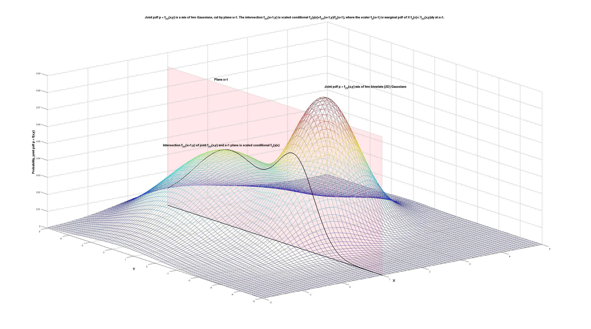
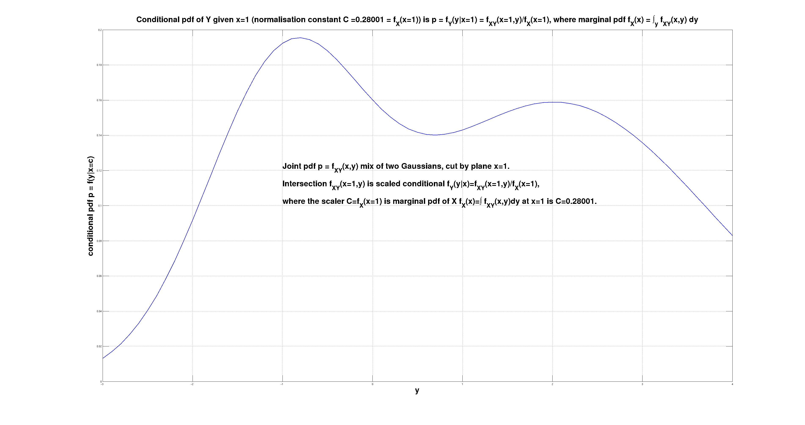
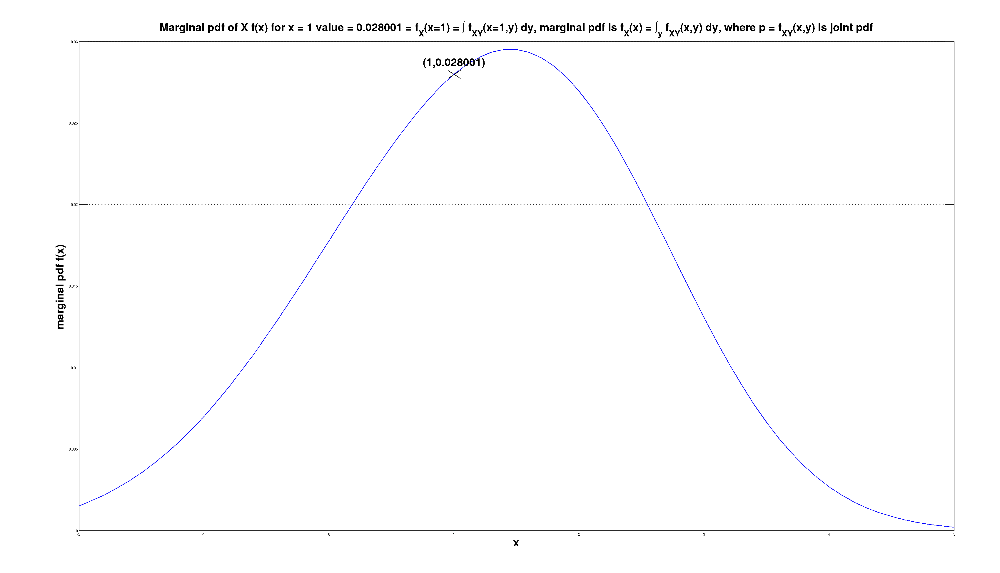

Knowing - what do I mean when I say I know something
I was told "the joint probability density function between two variables \( X \) and \( Y \) captures everything that there is ever to be known about the relation between those \( X \) and \( Y \)" 25 years ago (¡Hola! Miguel :-)), and it's been a blessing and a curse. Blessing - yeah the joint pdf \( f_{X,Y}(x,y) \) really does capture everything. Curse - often I read an article and think of the author "wish someone told you too", you poor soul.
So for me knowing something about \( X \) means knowing the distribution, the pdf \( f_X(x) \). Most of the time our knowledge is more than 1-dimensional, we have at least two qualities that we want to quantify the relationship of. So knowing something about \( (X,Y) \) jointly, for me means knowing the joint pdf \( f_{X,Y}(x,y) \).
Knowledge is knowing the joint probability function - either density p.d.f. or cumulative c.d.f. (using p.d.f. mostly to illustrate). Density p.d.f. or cumulative c.d.f. is an implementation detail. Depends on the mechanics of the contraption, can be both in the same device, is up to the implementation.
So knowledge is - joint density, is co-counts, counting number of times things of interest co-occur, happen together.
Probability is the measure of the residual uncertainty. Like length measures distance, probability measures uncertainty. Randomness is what gives us probability distributions that are not Dirac impulses, and thus gives us information content to work with.
NB the single letters \( X \) and \( Y \) are multi-dimensional, \( N \)-dimensional and \( M \)-dimensional vectors. The domain of the pdf is \( (N + M + 1) \)-dimensional in general, with \( N \)-input \( X \), \( M \)-output \( Y \), 1-extra dimension where counting or quantity of probability density or mass happens. + (The one extra dimension where counting happens is time. Time is somewhat special TBD will concern with it latter. For now: without time there is no discrete events or observations and no counting either, so no joint density, so no knowledge either. Time is necessary - but not sufficient - condition for us to get to know the world around us.)
Time in space-time \( (x,y,z,t) \) plays the same role as the \( p \) axis in a joint probability \( p=f(x,y) \): it is the special dimension that lets us count, accumulate, and order events. No time, no counting; no counting, no density. Conversely probabilities are always positive while time only flows forward—both axes are bounded and one-way.
The split \( (X,Y) \) is arbitrary as decided by us. Usually - \( X \) is what we observe easily but we don't care much about, \( Y \) is what we don't observe directly but care about would like to know which one. So by relating \( X \) to \( Y \), we want to deduce something about \( Y \), while observing \( X \).
These things of interest are "qualities". Quality is one dimension out of N in an N-dim vector space. Within one 'quality' that's 'what', we will measure counts those will be 'quantity' or 'how much' or 'how many'. + (TBD consider latter, but: while and to the extent the dimension N can't be forecast with 0 error from the other (N-1) dimensions, it exists as a separate dimension. Once it can be forecast with 0 error from the rest - it collapses and stops existing afa we are concerned.)
Space itself can be phrased this way: what is truly “nearby” has a non-trivial joint distribution \( p(\text{here},\text{nearby}) \neq p(\text{here})p(\text{nearby}) \). What is far apart factors and therefore forgets about each other. Closeness is simply dependence.
In the simplest case of a single quality, single dimension X in 1D, knowledge of X is the p.d.f. of X \( f_X(x) \). Everything that there is to be known about X is described by the re-normalised histogram of X where we count which ones of X, and then how many of which one.
The first non trivial case of knowledge is where we have two qualities, two dimensions X and Y, \( (X,Y) \) in 2D, knowledge is the joint p.d.f. of X and Y that is \( f_{X,Y}(x,y) \).
Everything that can be known about the relationship between two qualities X and Y is captured and described about their joint p.d.f. \( f_{X,Y}(x,y) \).
If we know the joint p.d.f. \( f_{X,Y}(x,y) \), we can derive the prior distributions both for X that is \( f_X(x) \), and for Y that is \( f_Y(y) \), by marginalisation. Marginal p.d.f.s are \( f_X(x) = \int_y f_{X,Y}(x,y) dy \) and \( f_Y(y) = \int_x f_{X,Y}(x,y) dx \). Marginalisation is "adding up" the probability mass in the dimension(s) we don't care about, the one(s) we marginalise out. Marginalisation maybe thought as "forgetting" - the detail is lost, but we achieve efficiency (less parameter), and robustness - we are not dependent anymore on the variable that was marginalised out (we are independent of it now - at least in our p.d.f.), + Keeping detail so not cost free, it takes resource implementing it. So if we don't need a particular dimension particular quality for whatever our goals are - it's better to forget about it.
Once we observe one of the qualities that are \( (X,Y) \), e.g. X, that shrinks the domain from 2D to 1D, and now everything that can be known about Y is described by conditional p.d.f. \( f_{Y|X}(y|x=a) \) that is computed by plugging \( x=a \) into the joint p.d.f. \( f_{X,Y}(x=a,y) \), then dividing re-normalising that function by the prior p.d.f. of X \( f_X(x) \) at \( x=a \) giving rise to new conditional p.d.f. \( f_{Y|X}(y) \) for Y that is defined as \( f_{Y|X}(y) = \frac{f_{X,Y}(a,y)}{f_X(a)} \).
Below I illustrate this point on the example of a joint pdf \( p = f_{X,Y}(x,y) \) that is a mix of two Gaussians in 2D space \( (x,y) \). We observe the variable \( X \), and that observations is \( x=1 \). The question is - what do we now know about the variable \( Y \), having observed the variable \( X \) (to be \( x=1 \)).
The observation \( x=1 \) is equivalent to the joint pdf being cut by the plane \( x=1 \). The intersection of the joint pdf \( f_{X,Y}(x,y) \) and the plane \( x=1 \) is \( f_{X,Y}(x=1,y) \). This curve is the best description of what we now know about the distribution of the unobserved variable \( Y \).
The starting model that was \( f_{X,Y}(x,y) \) is affected by the observation \( x=1 \). The effect is the intersection \( f_{X,Y}(x=1,y) \), and is outlined below. It is a function of \( y \), that is a scaled conditional \( f_Y(y|x=1) = \frac{f_{X,Y}(x=1,y)}{f_X(x=1)} \). The conditional pdf is \( f_Y(y|x) \).
The scaler \( f_X(x=1) \) is the marginal pdf \( f_X(x) \) of \( X \) at point \( x=1 \). The marginal pdf \( f_X(x) \) is computed from the joint pdf \( f_{X,Y}(x,y) \) by marginalization, by integrating out \( Y \) as \( f_X(x) = \int f_{X,Y}(x,y)\,dy \) and then plugging in \( x=1 \).
Everything that can be known about about anything can be construed as a relation between two things. (at the baseest level - myself and the world, the I and not-I.) Call them X and Y. So all knowledge about \( (X,Y) \) (what X tells us about Y, what Y tells us about X) - is in that X-Y relationship.
Everything that can be known about X-Y relationship is captured and described about their joint p.d.f. \( p=f_{X,Y}(x,y) \) or just \( p=f(x,y) \) the density; or c.d.f. \( p=g_{X,Y}(x,y) \) then it's just \( P=g(x,y) \) the cumulative. And that's it. The probability distribution captures all that can ever be known about the \( (X,Y) \) relationship.
Once X \( x=a \) is observed, then everything that is known about Y is described by the conditional p.d.f. \( p=f_{Y|X}(y|x=a) \) or just \( p=f(y|x) \) at \( x=a \).
The 3D function \( p=f(x,y) \) is cut with a plane \( x=a \). The cross section is \( f(x=a,y) \). It's not a p.d.f. as it does not sum to 1. The area of the cross section \( \{f(x,y),x=a\} \) that is a scalar is the area under \( f(x,y) \) at \( x=a \). This is also the value of the marginal p.d.f. \( f_X(x) = \int f(x,y) dy \) at \( x=a \), i.e. \( p=f_X(x=a) \). To convert \( f(x=a,y) \) into conditional p.d.f. \( f(y|x=a) \) we divide joint p.d.f. \( f(x=a,y) \) with the scalar (constant) that is marginal p.d.f. \( f_X(x=a) \): \( f(y|x=a)=f(x=a,y)/f_X(x=a) \).
Joint marginal conditional pdf 1 of 3. (click to zoom) 
Conditional pdf is ratio of joint (at point) and marginal 2 of 3. (click to zoom) 
Marginal pdf is derived from the joint pdf 3 of 3. (click to zoom) 
Coming back to "joint pdf captures everything there is in the relationship \(X,Y\)". Putting it in a wider context.
When reading about knowledge, I have come across the following so collected here for future reference.
We can have 2 types of knowledge about the outcome of (repeated) experiment(s):
- We know what will happen and when it will happen in each experiment. This is non-probabilistic, deterministic knowledge. NB it is a special case of both (b) cases below with the pdf being a Dirac impulse function.
- We know the possible outcomes, we know how many of each will happen if we do 100 experiments, but for each 1 experiment, we can't tell the outcome.
This is probabilistic knowledge where we know the pdf (=probability density function) of the experiment outcome.
It is the aleatoric kind of uncertainty (see below) - we know the statistics, the counts, but not what one outcome is going to be in every one experiment.
Uncertainty - obverse to knowing, to knowledge, lacking (perfect, deterministic) knowledge, we can think of types:
- Aleatoric uncertainty means not being certain what the random sample drawn (from the probability distribution) will be: the p.d.f. is known, only point samples will be variable (but from that p.d.f.). We can actually reliably count the expected number of times an event will happen.
- Epistemic uncertainty is not being certain what the relevant probability distribution is: it is the p.d.f. that is unknown. We can't even reliably count the expected number of times an event will happen.
The probabilistic knowledge of type (b) above and aleatoric uncertainty of type (b) are one and the same.
The 2D \( (X,Y) \) example is also useful to illustrate a further point. Once we observe \( X \), and work out the conditional pdf \( f_Y(y|x) \), the question arises - what next? What do we do with it?
If \( Y \) is discrete, we have a problem of classification. If \( Y \) is continuous, we have a problem of regression.
We have the entire curve to work with - and that's the best. But often, we approximate the entire curve, with a representative value, and soldier on. Then the question becomes: well how do we chose one representative value from that curve?
The "\( X \) observed \( Y \) not observed" is arbitrary - it could be the other way around. We can generalize this by introducing a 2D binary mask \( M \), to indicate what parts of the vector \( (X,Y) \) are present (observed), and what parts are missing (and thus of some interest, e.g. we want to predict or forecast them).
With present data \( X \) and missing data \( Y \) in \( (X,Y) \), then missing data imputation is actually equivalent to forecasting regression or classification. The same logic works even if the mask is in time, but the signal gets much weaker when the observed parts are in the past and the unknown parts live in the future—time Now inserts another dimension that has to be overcome.
Simplest case - X is 1-dim, Y is 1-dim, then knowledge of a \( (X,Y) \) relationship is the joint p.d.f. \( f_{X,Y}(x,y) \) that's a 3-D shape. Observation is cutting that 3-D shape with a 2-D plane \( x=a \). Intelligence is using the 2-D outline \( f_{X,Y}(x=a,y) \) that's the intersection between the 3-D joint shape and the 2-D \( x=a \) plane, to decide on the action to be taken. Now we have this new(er) knowledge (that normalised to 1 is conditional p.d.f. \( f_{Y|X}(y|x=a) \)), while still aiming for the same desired end as before.
Knowledge of relation \( (X,Y) \) is the joint p.d.f. \( f_{X,Y}(x,y) \). Observation is cutting that 3-D shape with a 2-D plane \( x=a \). Intelligence is deciding on the next action—now we have 2-D shape \( f_{X,Y}(x=a,y) \), incorporating this newest knowledge about X (normalised to sum 1 is the conditional p.d.f. \( f_{Y|X}(y|x=a) \)). All the while still aiming towards the same desired goal as before. (the goals themselves are outside of this, are not considered)
Conditioning Y on X is observing the \( x=a \), and then re-normalising \( f(y,x=a) \) such that it becomes a p.d.f. again to sum to 1 \( f(y|x=a) \). Observing quality X that is \( x=a \), is shrinking the dimensionality from 2D to 1D. In general from \( (N+1) \)-dim back to \( N \)-dim.
Chain of Reasoning (CoR)
If p.d.f. \( f_{Y|X}(y|x=a) = P(Y|X) \) is not very informative, we can undertake chain of reasoning (CoR). We can find a reasoning step \( Z \), that is \( P(Z|X) \), such that the conditional \( P(Y|Z,X) \) brings us closer to our end answer than \( P(Y|X) \) can bring us.
This is how hierarchies are made. Already \( P(Y|X) \) is a hierarchical relationship. Now conditioning on \( Z \) too, \( P(Y|Z,X) \), is another brick in the wall of a hierarchical relationship. Conditioning on X takes general N-dim \( P(X,Y) \), and reduces it down to at most \( (N-1) \)-dim space of \( P(Y|X) \). Conditioning even more on Z to \( P(Y|Z,X) \) does another slicing down, to at most \( (N-2) \)-space. From widest most detailed N-dim \( P(X,Y) \), to more general less specific \( P(Y|Z,X) \) at most \( (N-2) \)-dim.
One can undertake motivated slicing via \( Z \). For slicing by \( x=a \) the \( P(X,Y)=f_{X,Y}(x,y) \) to get \( f_{X,Y}(x=a,y) \) (then renormalised by marginal \( P(X)=f_X(x) \) at \( x=a \) into \( f_{X,Y}(x=a,y)/f_X(x=a) = f_{Y|X}(y|x=a) \) call it conditional \( P(Y|X) \)) - we undertake that b/c we hope \( P(Y|X) \) is going to be sharper, more informative than a presumed wide un-informative \( P(Y) \). So we could be selecting such \( Z \), that \( P(Y|Z,X) \) is even sharper. And we have the \( P(Z|X) \) to judge how justified we are to undertake our motivated reasoning \( Z \) step.
There are infinite number of \( Z \)-s we can slice-condition on. The trick is choosing "the right ones" for \( Z \). They can't be too divorced from \( X \), as then \( P(Z|X) \) will be very flat. The \( Z \) chosen also can't be too divorced from \( Y \) - then it will not add anything over and above \( X \), which is already too far from \( Y \) for any useful guide, \( P(Y|Z,X) \) will be as good (bad) as \( P(Y|X) \). (even if \( P(Z|X) \) may show relation to X) Looks like the size of the step when moving X→Y can be max ~20% in interestingness, but not more, to keep it true.
Chain of Thought (CoT), Chain of reasoning (CoR)
Extension to Type 2 intelligence: guided search through discrete space where reward is unknown in time and only becomes known after the last step in the sequence. Next step from Type 1 intelligence: pattern recognition single 1:1 input:output, reward known at every step.
CoR now often has to invent its own \( Z \)-s (or \( R \)-s for "reasons"), rather than simply conditioning on an observed variable. DSPy-style systems optimise not only the answerer \( P(Y|X) \) but the question-poser that proposes \( Z \) so \( P(Y|Z,X) \) becomes sharp. Both the query and the answer become learnable objects.
Non-reasoning autoregressive LLM-s: compute \( P(Y|X) \), then they sample from that distribution. Hence parameters like temp-erature, top_K, min_p, top_p.
Diffusion models image denoisers: learn the first derivative of \( \log(P(Y|X)) \), use that to get from the current sample, to a better sample, and they iterate. They add noise to in every step, and that serves to sample the whole distribution, rather than pick and converge to a single one point.
Afaics the reasoning models add only one step extra. Assume there is no good choice \( Y \) for the \( X \) - say \( P(Y|X) \) is flat uninformative, there is no good guess for Y. So let's figure out intermediate step Z. Then instead of \( P(Y|X) \), go after \( P(Y|Z,X)P(Z|X) \). NB summing over Z will recover exactly \( P(Y|X) \). The step \( Z \) is such that \( P(Y|Z,X) \) is informative, where \( P(Y|X) \) was not. So \( P(Y|Z,X) \) brings us closer to a better guess for \( Y \), in a way that \( P(Y|X) \) does not. Of course, what functions, and how they are fit, and how to chose bazillion of \( Z \)-s, and how to aggregate while searching - makes a world of difference.
Diffusers learning gradients and autoregressors learning the density are complementary. If/when we have access to both the function and its derivatives we can approximate more operators on top of the pdf itself—think H- and L- updates that reason about how the entire distribution should morph in one step.
Marginalisation is Forgetting
When I compute \( f_X(x) = \int f_{X,Y}(x,y) dy \) margnialising out i.e. "ignoring" Y is irreversibly destroying any knowledge of how X and Y co-vary. The operation is a lossy compression; I cannot reconstruct \( f_{X,Y} \) from \( f_X \) alone. A state with joint knowledge \( f_{X,Y} \) has "working memory" of the relationship. Marginalizing to \( f_X \) is forgetting Y, freeing up parameters space removing memory so losing specifics. Choosing which variable to marginalize is an act of attention allocation. Storing a joint p.d.f. over \( (N+M) \)-dims cost drops when marginalizing down to \( N \)-dim. We trade accuracy for efficiency, effectivelly compressing, so the trick is to forget just enough but not more than that. Conversely each new conditioning step is a re-memoization—preventing forgetting by keeping another dimension intact. But we pay in computational complexity.
Appendix +
A. Everything is a Computer in 2025 it seems +
Everything is a computer now atm. (2025) Information theory is the most general theory we got.
Knowledge is a p.d.f. Learning is acquiring a p.d.f. where we previously lacked one. Acquiring p.d.f. is figuring out what-s, and how many-s of those what-s.
Computing is taking our knowledge, the learned p.d.f.s we got, then manipulating those p.d.f.s, by either marginalisation, or conditioning, to create new p.d.f.s.
These new p.d.f.s then tell us something about what we care about but we can't observe, having observed things that are easy for us to observe, but we don't care about.
The general model of computation is one of discrete states. Every state is characterised by a different p.d.f. function. Transitions between states occur too. Those are also characterised by their own p.d.f.s. Markov assumption is that transitions depend on the current state, but don't depend on the path we took to get to the current state. So the future states are independent of the past states, only on the present state.
Computation is to information p.d.f. \( p=f(x,y,...) \) what physics is to space-time \( (x,y,z,t) \). Both have a “special” dimension: probability mass \( p \) that always stays \( \ge 0 \), and time \( t \) that only flows forward. Transformations manipulate the rectangular coordinates while respecting that privileged axis.
Information and knowledge move against entropy by copying and spreading. When information spreads from A to B, B gains knowledge, but A does not lose it—the operation is copy, not move. What costs energy is the physical act of copying.
B. Missing Data Imputation +
With present data \( x \) and missing data \( y \) in \( (x,y) \), then missing data imputation is actually equivalent to forecasting regression (continuous \( y \) variable) or classification (discrete \( y \) classes). Big difference is whether \( x \) and \( y \) are contemporaneous, or not: not contemporaneous makes the signal connection \( x \rightarrow y \) much, much weaker, by orders of magnitude. Time Now is a big barrier in knowing.
The mask view \( M \) above is the operational view of imputation. Once the mask is defined, we simply treat the missing cells as \( Y \) and the present ones as \( X \), and the whole machinery of conditional pdfs applies.
Once we have any curve \( f_Z(z) \) whichever way we got it (marginal, conditional), we can do derived statistics to it, in order to convert the curve into one (point forecast) or two (forecast and it's variation) points or however many we fancy (quartiles, quintiles, etc) to characterise the entire curve/area/volume/Nvolume (1D/2D/3D/Ndim) with, and reduce to characterise the whole continuous mathematical object with few discrete numbers.
C. Now and Time, Past, Present, Future +
TBD Time. Mechanistic pedestrian treatment of time (past/now/future) in the same framework where all is knowns is a p.d.f. So we have past and future separated by the now that marks the present for us. Say \( X = \) past, \( Y = \) future in our \( (X,Y) \) and we have the p.d.f. \( f_{X,Y}(x,y) \).
The past has already happened, there is only one of it, it's certain and deterministic. Translated in p.d.f. language that means the \( f_X(x) \) or \( f_{X|Y}(x|y) \) distribution *must* be a Dirac delta impulse. The \( f_X(x) \) can not be any other function shape than a Dirac delta.
The future has not happened yet. We know there two or more options for the future, it is never a single one. Translated in p.d.f. language that means the \( f_Y(y) \) or \( f_{Y|X}(y|x) \) distribution *can NOT* be a Dirac delta impulse. The \( f_Y(y) \) can be any other function shape than a Dirac delta. But not a Dirac delta.
Now is a moving boundary between the all-Dirac past, and never-Dirac future. Living is the future out-running the past, the past failing to catch up the future. Death is the point at which the past finally catches up with the future. At that point all uncertainty ends, seemingly never to return back. Death collapses the future functions (p.d.f.s) from general forms with uncertainty (anything but Dirac Delta-s), into a Dirac Delta impulse. The uncertainty ends, the Past finally catches up with the Future, erasing the Now time boundary in the process. For self anyways. I detach from not-I completely irreversibly, the final separation.
Time is the special dimension on which everything we can imagine—real or counterfactual—happens. Time gives rise to the idea of infinity and, symmetrically, conceiving infinity gives rise to time: we imagine \( N \), then \( N+1 \), and so on, never ending. That mental sequence is how we make the jump from discrete to continuous.
Time as sequence of events is the counter that labels the observations; it is not itself modelled by a joint conditional p.d.f. Time must be discrete for counting to occur. A perfectly continuous time would defeat counting (what does “next” mean?). Discreteness hints the underlying latent space is very high-dimensional.
Time makes the jump from discrete to continuous space possible. When we imagine bisecting an interval for the \( N \)-th time, we also imagine the \( (N+1) \)-st time. Memory of \( (N-1,N,N+1) \) suffices, yet without that memory the limit process would fall apart.
Both time and space implement memory. Patterns live in time; they require the medium of time to exist. Those patterns can be converted 1:1 into spatial states that memorize the same information. The existence of a discrete entity can be in time (patterns) or in space (states).
Markovian blanket = in the present, memorising everything from the past, that is to be used to forecast the future. Everything that can be determined about the future, from the past, is written onto the present.
Time is the currency of life - time is what is spent in the process of living.
D. Forecasts must have error > 0 for information to exist +
The error is necessary for information to exist. In the limit where the error is zero, no new information is ever observed - everything is known, the uncertainty is zero.
Life exists only with uncertainty. Where/when the error is zero, everything is predictable. This is the state before a living thing is born, and after a living thing dies.
Life exists in that goldilocks region where there is limited uncertainty. If the uncertainty is zero, then we are not-born yet, or dead. If the uncertainty is too high, things are chaotic, too random, there isn't enough order and structure for life to exist.
Every living thing introduces another dimension, another axis, of non-zero uncertainty, into existence. When it dies, the uncertainty disappears, that axis of variance is no more.
In physics disorder (entropy) is something we measure at macro level as temperature. It is typically increased by adding energy. So - energy increases temperature increases entropy increases disorder increases error decreases predictability.
E. Qualities, Quantities, and Dimensions +
Quality and quantity. Dimensions \( (X,Y) \) are qualities, and we quantify them each too. When do we add new quality and obversely when do we lose a quality (dimension)? (LJ @ HN) The second “law” of dialectical materialism by Engels—"the law of the passage of quantitative changes into qualitative changes"—captures this nicely. Enough quantity becomes a new quality.
Suppose I have a 5-dimensional observation and I'm wondering if it's really only 4 dimensions there. One way I check is - do a PCA, then look at the size of the remaining variance along the axis that is the smallest component (the one at the tail end, when sorting the PCA components by size). If the remaining variance is 0 - that's easy, I can say: well, it was only ever a 4-dimensional observation that I had after all. However, in the real world it's never going to be exactly 0. What if it is 1e-10? 1e-2? 0.1? At what size does the variance along that smallest PCA axis count as an additional dimension in my data? The thresholds are domain dependent - I can for sure say that enough quantity in the extra dimension gives a rise to that new dimension, adds a new quality. Obversely - diminishing the (variance) quantity in the extra dimension removes that dimension eventually (and with total certainty at the limit of 0). I can extend the logic from this simplest case of linear dependency (where PCA suffices) all the way to to the most general case where I have a general program (instead of PCA) and the criterion is predicting the values in the extra dimension (with the associated error having the role of the variance in the PCA case). At some error quantity \( \gt 0 \) I have to admit I have a new dimension (quality).
Emergence, phase transition and similar: 1) where quantity is large enough (this condition is necessary but not sufficient) and becomes new quality 2) thus this new quality becomes a new dimension in the phenomenon investigated, so my observations data from N-dim vectors become (N+1)-dim. "More is Different" is a succinct summary of "enough quantity becomes a new quality".
An image is worth 16×16 words, but a program is worth \( 2^4 \) images. Kolmogorov complexity says a learning system finds the shortest program that explains the data. Compression is learning. A forecasting error of quantity \( >0 \) is the extra dimension—new quality—waiting to be captured. When the program makes perfectly accurate predictions, that dimension disappears or was never there.
TBD Ndim Space. Ratio of Ncube/Nball. Does our intuition fail us about the representative values of a distribution when we go from low \( N \) \( (N = 2) \) to high(er) \( N \) \( (N \gt 10) \)? For large N, Nspace in Ndim: (a) moves into the edges (b) every observation is an outlier (in some dimension). Does that mean the space becomes discrete, it discretizes?
TBD Sparse representation, moving to symbolics and rules. Once the Ndim vector becomes sparse, we move from continuous representations to discrete symbolic rules. That’s when we start writing down the rules explicitly.
F. Randomness, Search, and Open-Endedness +
Randomness, entropy is what enables search. Random steps are a way of searching through the global space. Without randomness we hill-climb to the nearest peak and stay there forever; the derivatives decay to zero, motion stops, intelligence halts.
There is no AI/ML without randomness: (1) Autoregressive LLM sampling—temperature, top_k, etc.— prevent robotic outputs. (2) SGD uses noisy mini-batches; warnings about local minima never materialized because the noise keeps us moving. (3) Diffusion models follow the log conditional probability gradient but also add noise so they don't collapse to a single sample.
That what works will keep being done, and finally will be overdone. Then things need to change in order for them to stay the same. It's the dose that makes the poison: noise too small and we stagnate, too large and the structure dissolves.
Randomness is the source of uncertainty and therefore information. Random steps implement global search instead of local greedy search. Trial and error equals variation and selection: trial == variation, error == selection.
Open endedness in that way is reminiscent of the diffusion sampling, and the role the noise term plays. If we add too much noise, the denoising fails. Too little noise, and the steps are tiny, nothing new is learned. The step needs to be just right—not too small, not too large. Kelly-criterion thinking says we should keep \( \mu/\sigma \lesssim 0.2 \) for comfortable compounding (halve the leverage when uncertain). That heuristics rhymes with how CoR steps are ideally “only” 20% more interesting than the previous step.
Kelly criterion leverage: \( f = \mu / \sigma^2 \). Assume errors in \( (\mu,\sigma) \) estimates => deploy half-kelly leverage \( f=\mu/\sigma^2/2 \). Market neutral fund leverage 3 origin: assume average \( \mu=2\% \) \( \sigma=4\% \) p.a. on gross book, so half-kelly leverage \( f=0.02/0.04^2/2=6.25 \), so with capital \( C=1 \), aim for \( (\text{Long}=3,\text{Short}=-3) (\text{Gross}=6,\text{Net}=0) \) book.
Sufficiently high frequency feels smooth. Once the frequency is high enough, the alternation peak-trough merge into a constant line. Infinite frequency == zero period == DC no alternation.
G. Life, Entropy, and Knowledge +
Definions of life collected over time from various sources.
Life as Thermodynamic Evidence of Algorithmic Structure in Nature (2012) (mdpi.com). Organisms encode information about their environment in order to survive. The encoding costs energy and generates entropy. Organisms use that encoded information to gain or not lose energy. Only where the information cycle is net positive can life exist. Since life exists, nature cannot be “too unpredictable”.
Living things decrease entropy; non-alive things increase entropy. ("What is Life?" by Erwin Schrodinger http://www.whatislife.ie/downloads/What-is-Life.pdf) Life is that what decreases entropy. (is this only taking into account the living thing only, within the boundary of it? b/c outside - the disorder may as well increase?)
Life is in a goldlocks region between max uncertainty (random, entropy) and min uncertainty (Dirac delta): not too random, not too certain, just right random/certain as to be interesting.
In order to achieve entropy decrease, life needs to exercise 1) control, and 2) adaptation. Control starts with enclosure. A piece of space is enclosed using a membrane, a barrier, a border. The inside of the barrier needs to gain enough negative entropy, so to sustain itself and the wall. Adaptation is achieved with intelligence.
All living things are part of the tree of life. They are all related. So the life-o-sphere is expanding. One can think of life-o-sphere as a whole as a giant organism that is living.
Atoms are only ever created and destroyed in rare nuclear reactions. Most of the time they are just reconfigured like Lego blocks. The atoms that make our bodies were lent to us. Atoms themselves are mostly empty space with smaller vibrating sub-particles. The relations between particles matter more than the particles themselves—like letters versus words.
Life is self‐reproduction with variation. Life is ability to make decisions about the future and take action, and thus influence and change your own future. Intelligent life in biological sense is the ability to achieve the same goal via differing paths, different means.
Life is recurring pattern. Joscha Bach "We Are All Software". We recognise the same person even if all molecules churned many times. The pattern repeats over time even if the details differ.
Life is a cycle of generation, degeneration, regeneration. "I" is a collection of particles that is arranged into this pattern, that will decompose and be available to nature to reorganize into another pattern. Death is part of a gift economy. You are given this enormous gift, life. You enrich it as best you can. And then you give it back. (Emily Levine, Andreas Weber). Children give you a glimpse of a second life, if not of an eternal one.
H. Brains, AIs, and Efficiency +
Digital intelligences (currently AI-s - artificial intelligences) need lots of energy. They can work "as if" perfect copies, separating software (spirit) from the hardware (substrate). They can all learn different knowledge from different experiences, but then share their knowledge back with everyone at high speed. So they can implement distributed learning at unit level. Separation s/w spirit from h/w substrate also makes them immortal.
Analogue intelligences (currently HI - human intelligences; but all animales and plants, all life really) can not work "as if" perfect copies, they are all one of a kind and unique. Their spirit s/w and their substrate h/w are entangled. They can't share their experiences easily. They are mortal, their spirit s/w stops existing when their substrate h/w dies. However, they have one big advantage: they use much less energy, orders of magnitude less energy than digital intelligences.
Energy lots of it is used to create the insulation of s/w spirit separate from h/w substrate. So digital intelligence being high energy, can't bootstrap itself 0->1 into being on its own. For that, only low energy is possible. And low energy implies analogue intelligence. So the bootstrapping of intelligence goes none -> analogue (low energy) -> digital (high energy).
Assume learning for 30 yrs ~ \(10^9\) sec, visual processing sampling at 10 fps, that equals \(10^{10}\) images as training samples. Assuming training a human brain with \(10^{13}\) "parameters" (100B neurons × 100 connections). That makes 1 image per \(10^3\) parameters. Meanwhile our best ANN-s train with way more images per parameter—they trade computation and data for smaller models, while biological brains sacrifice parsimony in weights to gain speed and low power.
Energy and intelligence travel together. Intelligence figures out what to do; energy is what gets it done in the physical world.
I. Collective Intelligence and Networks +
All intelligence is collective intelligence. Humans are collections of organs and tissues, which themselves are collections of cells. A cell is itself a collection of molecular networks (and so on). The subunits are competent themselves. There is a scale up process in which these competent subunits give rise to an intelligent unit bigger than themselves (Michael Levin).
The value—and even the reality itself!—is in the connections, not the nodes. People move from villages to cities because density breeds civilization. Empires built trading outposts to create connections. Roman logistics favoured water routes because the connections mattered more than the raw distance. Value of a network scales with \( N^2 \) not \( N \): the value is in the connections.
Mode of operation online vs offline diverges. Online geeks tend to cooperate in good-good positive sum interactions. Offline scarcity sometimes locks people into bad-good zero-sum trades. The larger, looser internet neighborhoods proved fertile for altruistic building of the web, Wikipedia, blogs, AI. Knowledge sharing thrives where connections are abundant.
Neural Networks architecture (N nodes of about the same power, with connections arcs between them scaling \( N^2 \)) implementing Parallel Distributed Processing implementing intelligence - should be a grander lesson. Having a single node that is much more powerful than the rest is how cancer behaves. Intelligent systems survive by distributing power.
NB that any graph of N nodes can be described by a matrix \( [N \times N] \). The graph operations are matrix operations—matrix multiplication implies a linear model at the base.
NB the standard deviation and risk as measured by it only goes down with \( \sqrt{N} \) the number of samples. So having the collective intelligence go up with \( N^2 \) the number of nodes counter-acts that. An individual node may sharpen its pdf with \( \sqrt{n} \) data (and suffers curse of dimensionality). The system as a whole fights that by increasing \( N \) and the intelligence with \( N^2 \).
N^2 mechanism that makes the network powerful is sharing of knowledge, that all N see what 1 sees. So it's enough for every one of the N to see \( 1/N \) of the data in \( 1/N \) of the time, and to then share it with N others. So then all N get to see and learn whole data N. So the total knowledge is N, and is shared N times (redundancy), and that happens \( 1/N \) of the time—if the transfer of knowing between the N nodes is fast.
The real world can't be sped up. So the only way to speed up is to divide the work, get them to do the work in \( 1/N \) of the time, and then share the knowing between themselves.
J. Types of Intelligence +
It's by logic that we prove, but by intuition that we discover. (Poincaré) To know how to criticize is good, to know how to create is better.(François Chollet)
Broadly three categories of problem solving patterns -- recitation, intuition, and reasoning. Recitation: you simply recognize a known problem and apply the steps you've learned. Like playing a chess opening. Recitation is a database lookup. Intuition: in the face of a novel situation, you pattern-match it to what you've encountered before and you "just know" what to do. Like a very experienced chess player seeing the best move in <1s. Reasoning: you consciously and deliberately analyze a novel situation, using a combination of abstract principles and step-by-step simulation. Like analyzing a chess position and simulating in your mind possible future trajectories.
Types of intelligence-s, (T-s): Type-1 pattern recognition, idea generation, guessing a not insane guess. Type-2 logical thinking, guided search through discrete space. Type-3 open endedness, directed but almost random hypothesis generation (active learning). Type-4 collective intelligence—AI-s coordinating (sometimes cooperating, sometimes competing) in AI society—where individual irrational behaviour aggregates into rational group-level feelings.
We share the meta-learning and meta-knowledge machinery with every other living thing: we're leaves on the same tree of life. We are made of collective intelligences (cells, made of molecules...) and simultaneously build a collective intelligence (society). Human intelligence—and its stupidity—is collective too.
We live Type-3 intelligence whenever we seek novelty and interestingness. Having children brings that home: watching them learn to move, to speak, to press a button and discover a song. At first the joint p.d.f. \( p(\text{press button}, \text{song plays}) \) is flat. The first time, surprise! High residual error. So the kid repeats it four or five times until the distribution bumps up, the error shrinks toward zero, and knowing solidifies.
Type-4 intelligence is synchronizing with others—cooperation and competition at maybe 4:1—to build collective intelligence. Here emotions appear. They are mostly about other people, not much about self; introspection exists, but it is a small slice. Daniel Kahneman’s “Thinking Fast and Slow” fits: Type-1 pattern recognition, Type-2 reasoning, plus these social Types 3 & 4 layered above.
Chains-of-Reasoning (CoR) is Type-2 reasoning layered on top of Type-1 N-gram guessing. Type-3 will graft naturally on Type-2: active learning with just-right steps (again that \( \mu/\sigma \le 0.2 \) intuition). Type-4 collective intelligence pulls in social dynamics; we will want AI-s to have warm feelings toward humans and other carbon-based life forms.
Motivations behind "possibly \( \mu/\sigma \lt 0.2 \)": (a) Kelly betting gives tolerable approximation errors when \( \mu/\sigma \) is small, hence the comfort zone above. (b) Distilling a smaller network from a bigger one typically lets us shrink by ~20% once the bigger one groks the pattern. (c) Bolting CoR onto a base language model often nets ~20% uplift. The same ratio pops up across scaling laws.
If only I could fathom the existence of a stone or running water, that would be truly fascinating. Compared to that, the taxonomy above is just rearranging what we already half-know.
K. Knowing and knowledge, epistemology, even ideology? +
Knowing and knowledge, epistemology, even ideology?
- Known Knowns. Deterministic knowledge - we know exactly which one. (deterministic knowledge above)
- Known Unknowns. We don't know which one, but we know how many of which type; i.e. the distribution. (known pdf, aleatoric uncertainty above)
- Unknown Unknowns. We don't know the p.d.f. either. (epistemic uncertainty above)
- Unknown Knowns. Ideology. Fish swimming in water never knowing anything else but water. Possibly thus being unable to perceive the water too? (Zizek @ YT)
Is wisdom the awareness of "ignorance is modelled by the p.d.f", and "knowledge is zero ignorance never to be attained" by us humans?
Knowledge, taste, wisdom: perhaps wisdom is just good taste in curating knowledge.
Lindy effect. Lifetimes of intellectual artifacts follow power law distribution. Assume survival time \( X \) with p.d.f \( f(t)=c/t^{(c+1)} \) for \( t \ge 1 \). If \( c=2 \), the expected additional life equals the life seen so far. (John D. Cook)
Laplace’s rule of succession. If some trend has been going for \( N \) years, there’s a \( 1/(N+2) \) probability the trend breaks next year and 50% chance it continues another \( N+1 \) years. If some event hasn’t happened for \( N \) years, there’s a \( 1/(N+2) \) probability it happens next year. Limitation: for \( N=0 \) probability is \( 1/2 \), often an overstatement. It typically overestimates the chance of unprecedented events occurring.
L. Consciousness +
Connection to consciousness. Not a lot specifically, nothing over and above what's true of the brain as per the writing of Karl Friston (of his work I became aware recently; video https://www.youtube.com/watch?v=iPj9D9LgK2A, text https://www.wired.com/story/karl-friston-free-energy-principle-artificial-intelligence/; shortest summary "brain machine works by minimising the discrepancy error between model forecast and observation by better model and/or action in the world", aka "minimize free energy" principle). But had to write some recently, so here.
One view that seems testable to me: consciousness is like the conductor in the orchestra, it's the router in an Mixture of Experts model. Consciousness module is the router in MoE. Experts in the MoE are the individual members of the orchestra, every one playing their own instrument. So while the router is not a very big or a very special module (in fact - it's in many ways simpler then the specialised modules) - it's a single point of failure. So once consciousness (in HI brain) / router (in IA MoE) fails - no expert can learn properly, or even if the experts learns, the knowledge can not be utilised.
MoE architecture is the reason why it's so data efficient. Sparse representations, by virtue of injecting that prior knowledge in the process ("these connections for this data do not need updating"), can be data efficient. It's efficient to know in advance "this data is no use to Experts 1,3,4,5, and is to be used to reach only Expert#2". MoE maybe a reason why we have too many neurons. Our brains are less efficient than NN-s when it comes to utilising their weight. NN-s are much more efficient than us humans, when looking at efficiency in weights sizes space. Our brains trade parsimony in weights space, to gain efficiencies to gain speed and reduce power consumption - both achieved by MoE.
Further: sparse representations (and MoE is a macro-scale example) may make incremental learning, which is one way to implement continuous learning, practically doable. If only a limited set of weight need to be updated, for the brain to acquire new memory or knowledge, that means it can be done without losing all other previous memory or knowledge.
M. Etc +
Amusing paper illustrates how new/more information can make the entropy (uncertainty) higher, thus reducing our knowledge. Where our knowledge measure is the spikiness of the probability density function. After the additional observation (new information), the conditional p.d.f. post the observation is flatter then before => our knowledge decreased.
Michael R DeWeese and Markus Meister (1999), "How to measure the information gained from one symbol", Network: Computation in Neural Systems, 10:4, 325-340, DOI: 10.1088/0954-898X/10/4/303
--
LJ HPD Thu 20 Nov 2025